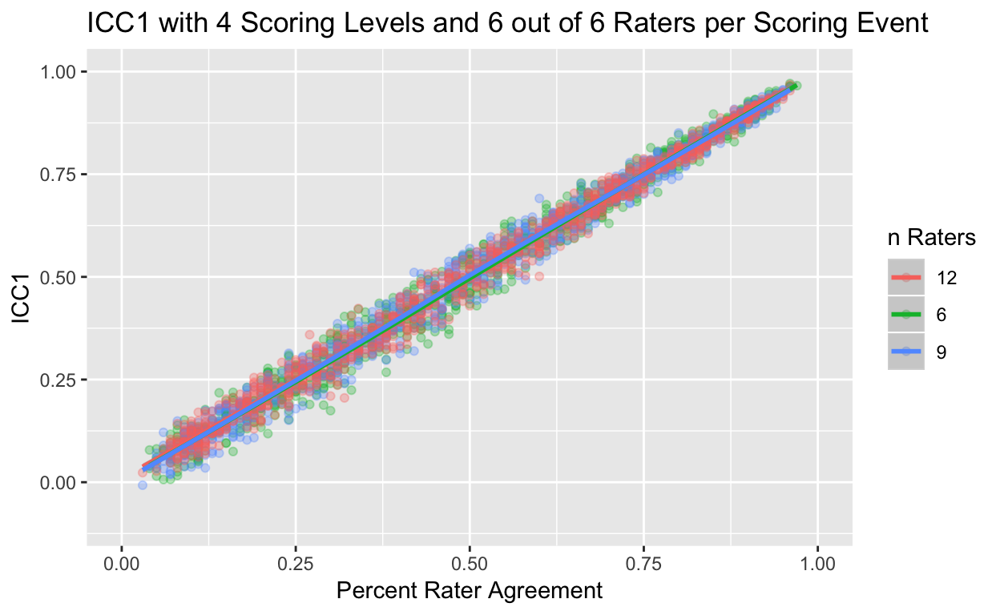

Relationship Between Intraclass Correlation (ICC) and Percent Agreement
Jason Bryer
Excelsior CollegeGuher Gorgun
University at Albany2018-11-01
Source:vignettes/IRRsim.Rmd
IRRsim.RmdAbstract
Inter-rater reliability (IRR) is a critical component of establishing the reliability of measures when more than one rater is necessary. There are numerous IRR statistics available to researchers including percent rater agreement, Cohen’s Kappa, and several types of intraclass correlations (ICC). Several methodologists suggest using ICC over percent rater agreement (Hallgren, 2012; Koo & Li, 2016; McGraw & Wong, 1996; Shrout & Fleiss, 1979). However, the literature provides little guidance on the interpretation of ICC results. This article explores the relationship between ICC and percent rater agreement using simulations. Results suggest that ICC and percent rater agreement are highly correlated (R² > 0.9) for most designs.When raters are involved in scoring procedures, inter-rater reliability (IRR) measures are used to establish the reliability of measures. Commonly used IRR measures include percent rater agreement, intraclass correlation coefficients (ICC), and Cohen’s Kappa. Several researchers recommend using ICC and Cohen’s Kappa over Percent Agreement (Hallgren, 2012; Koo & Li, 2016; McGraw & Wong, 1996; Shrout & Fleiss, 1979). However, there are misconceptions and inconsistencies when it comes to proper application, interpretation, and reporting of these measures (Kottner et al., 2011; & Trevethan, 2017). Moreover, researchers tend to recommend different thresholds for poor, moderate, and good level of reliability (see Table 2). These inconsistencies, and the paucity of detailed reports of test methods and results, perpetuate the misconceptions in the application and interpretation of IRR measures.
Current recommendations regarding the thresholds of reliability estimates suggest considering purposes and consequences of tests, and the magnitude of error allowed in test interpretation and decision making (Trevethan, 2017; AERA, NCME, & APA, 2014; Kottner at al., 2011). Furthermore, Kottner et al. (2011) also recommend reporting multiple reliability estimates. A low ICC might be due to lack of variability between subjects so by reporting different reliability coefficients (e.g. percent agreement) readers can get a more complete understanding of the degree of reliability.
Table 1. Descriptions and formulas of IRR measures
| IRR Statistic | Description | Formula |
|---|---|---|
| Percent Agreement | Absolute agreement | \(\frac{number\ of\ observations\ agreed\ upon}{total\ number\ of\ observations}\) |
| ICC(1,1) | One-way random effects, absolute agreement, single measurements | \(\frac{MS_R = MS_W}{MS_R + (k - 1)MS_W}\) |
| ICC(2,1) | Two-way random effects, absolute agreement, single measures | \(\frac{MS_R - MS_W}{MS_R + (k - 1)MS_E + \frac{k}{n}(MS_C - MS_E)}\) |
| ICC(3,1) | Two-way random mixed effects, consistency, single measures. | \(\frac{MS_R - MS_E}{MS_R + (k-1)MS_E}\) |
| ICC(1,k) | One-way random effects, absolute agreement, average measures. | \(\frac{MS_R - MS_W}{MS_R}\) |
| ICC(2,k) | Two-way random effects, absolute agreement, average measures. | \(\frac{MS_R - MS_E}{MS_R | \frac{MS_C - MS_E}{n}}\) |
| ICC(3,k) | Two-way mixed effects, consistency, average measures. | \(\frac{MS_R - MS_E}{MS_R}\) |
| Cohen’s Kappa (κ) | Absolute agreement | \(\frac{P_o - P_e}{1 - P_e}\) |
Note. \(MS_R\) = mean square for rows; \(MS_W\) = mean square for risudal sources of variance; \(MS_E\) = mean square error; \(MS_C\) = mean square for columns; \(P_o\) = observed agreement rates; \(P_e\) = expected agreement rates.
Table 2. Guidelines for IRR estimates
| Reference | IRRMetric | Guidelines | |
|---|---|---|---|
| Cicchetti | Cicchetti & Sparrow (1981); Cicchetti (2001) | ICC, Cohen Kappa | < 0.4 Poor 0.4 - 0.6 Fair 0.6 - 0.75 Good > 0.75 Excellent |
| Zeger | Zeger et al. (2010) | Cohen Kappa | < 0.2 Slight 0.2 - 0.4 Fair 0.4 - 0.6 Moderate 0.6 - 0.8 Substantial > 0.8 Almost perfect |
| Fleiss | Fleiss (1981, 1986); Brage et al. (1998); Martin et al. (1997); Svanholm et al. (1989) | Cohen Kappa | < 0.4 Poor 0.4 - 0.75 Fair > 0.75 Excellent |
| Altman | Altman (1990) | < 0.2 Poor 0.2 - 0.4 Fair 0.4 - 0.6 Moderate 0.6 - 0.8 Good > 0.8 Very good |
|
| Shrout | Shrout (1998) | < 0.1 Virtually none 0.1 - 0.4 Slight 0.4 - 0.6 Fair 0.6 - 0.8 Moderate > 0.8 Substantial |
|
| Landis and Koch | Landis & Koch (1997) | Cohen Kappa | < 0.2 Poor 0.2 - 0.4 Fair 0.4 - 0.6 Moderate 0.6 - 0.8 Substantial > 0.8 Almost perfect |
| Portney and Watkins | Portney & Watkins (2009) | ICC | < 0.75 Poor to moderate 0.75 - NA Reasonable for clinical measurement 0 - 0.75 Poor to moderate > 0.75 Reasonable for clinical measurement |
| Koo and Li | Koo & Li (2016) | ICC | < 0.5 Poor 0.5 - 0.75 Moderate 0.75 - 0.9 Good > 0.9 Excellent |
Research Questions
Given the different types of ICC and guidelines for interpretation, this paper is guided by the following research questions:
- What is the relationship between ICC and PRA?
- Are the published guidelines for interpreting ICC appropriate for all rating designs?
Method
There are several designs for establishing IRR. We are generally concerned with the ratings of m subjects by k raters. The simplest design is \(m x 2\) where two raters score all m subjects. However, it is common in education to have \(k > 2\) raters where each subject is scored by \(k_m = 2\) resulting in a sparce matrix. Shrout and Fleiss (1979) provide guidance on which of the six types of ICC to use depending on your design. The six types of ICC considered here are:
- ICC1 - Each subject is rated by 2 random raters.
- ICC2 - Each subject is rated by \(k_m > 2\) raters.
- ICC3 - Each subject is rated by a fixed set of k raters.
- ICC1k - 2-way ANOVA version of ICC1.
- ICC2k - 2-way ANOVA version of ICC2.
- ICC3k - 2-way ANOVA version of ICC3.
The IRRsim package implements several functions to facilitate simulating various scoring designs. To begin, let’s look at the simulateRatingMatrix function. This function will generate an m x k matrix. The algorithm works as follows:
- For each row one rater is selected at random.
- For that rater, a score is randomly selected from the distribution defined by the
response.probsparamter. By default, values are selected from a uniform distribution. - A random number between zero and one is generated. If that number is less than or equal to the desired agreement as defined by the
agreeparameter, the score for the remaining raters is set equal to the score from step two. Otherwise, scores are randomly selected for the remaining raters using the distribution defined by theresponse.probsparameter. - If \(k_m < k\), then \(k - k_m\) raters from each row are selected and their scores are deleted (specifically, set to
NA).
The following example demonstrates creating a 10 x 6 scoring matrix with four scoring levels and a desired percent rater agreement of 60%.
set.seed(2112)
test1 <- simulateRatingMatrix(nLevels = 4,
k = 6,
k_per_event = 6,
agree = 0.6,
nEvents = 10)
test1
#> aa ab ac ad ae af
#> 1 1 1 1 1 1 1
#> 2 4 4 4 4 4 4
#> 3 3 3 4 4 4 2
#> 4 4 1 4 3 1 3
#> 5 2 2 2 2 2 2
#> 6 2 2 2 2 2 2
#> 7 2 2 3 1 2 4
#> 8 1 3 3 1 4 2
#> 9 4 4 4 2 2 3
#> 10 4 4 4 4 4 4In many educational contexts, \(k_m = 2\). The following example simulates the same scoring matrix but retains only two scores per scoring event.
set.seed(2112)
test2 <- simulateRatingMatrix(nLevels = 4,
k = 6,
k_per_event = 2,
agree = 0.6,
nEvents = 10)
test2
#> aa ab ac ad ae af
#> 1 1 NA 1 NA NA NA
#> 2 4 NA NA NA 4 NA
#> 3 3 NA NA 4 NA NA
#> 4 NA 1 NA NA NA 3
#> 5 NA 2 2 NA NA NA
#> 6 NA 2 NA NA 2 NA
#> 7 2 NA NA NA 2 NA
#> 8 NA NA 3 NA 4 NA
#> 9 4 4 NA NA NA NA
#> 10 NA 4 4 NA NA NAThe agreement function calculates the percent rater agreement for an indiviual scoring matrix.
To examine the relationship between percent rater agreement and other inter-rater reliability statistics, we will simulate many scoring matrices with percent-rater agreements spanning the full range of values from 0% to 100%. The simulateICC utilizes the simulateRatingMatrix for generating many scoring matrices for varying percent rater agreements.
test3 <- simulateICC(nLevels = 4,
nRaters = 6,
nEvents = 100,
nSamples = 10,
parallel = FALSE)
#>
|
| | 0%
|
|= | 1%
|
|= | 2%
|
|== | 3%
|
|=== | 4%
|
|==== | 6%
|
|==== | 7%
|
|===== | 8%
|
|====== | 9%
|
|====== | 10%
|
|======= | 11%
|
|======== | 12%
|
|========= | 13%
|
|========= | 14%
|
|========== | 16%
|
|=========== | 17%
|
|============ | 18%
|
|============ | 19%
|
|============= | 20%
|
|============== | 21%
|
|============== | 22%
|
|=============== | 23%
|
|================ | 24%
|
|================= | 26%
|
|================= | 27%
|
|================== | 28%
|
|=================== | 29%
|
|==================== | 30%
|
|==================== | 31%
|
|===================== | 32%
|
|====================== | 33%
|
|====================== | 34%
|
|======================= | 36%
|
|======================== | 37%
|
|========================= | 38%
|
|========================= | 39%
|
|========================== | 40%
|
|=========================== | 41%
|
|=========================== | 42%
|
|============================ | 43%
|
|============================= | 44%
|
|============================== | 46%
|
|============================== | 47%
|
|=============================== | 48%
|
|================================ | 49%
|
|================================ | 50%
|
|================================= | 51%
|
|================================== | 52%
|
|=================================== | 53%
|
|=================================== | 54%
|
|==================================== | 56%
|
|===================================== | 57%
|
|====================================== | 58%
|
|====================================== | 59%
|
|======================================= | 60%
|
|======================================== | 61%
|
|======================================== | 62%
|
|========================================= | 63%
|
|========================================== | 64%
|
|=========================================== | 66%
|
|=========================================== | 67%
|
|============================================ | 68%
|
|============================================= | 69%
|
|============================================== | 70%
|
|============================================== | 71%
|
|=============================================== | 72%
|
|================================================ | 73%
|
|================================================ | 74%
|
|================================================= | 76%
|
|================================================== | 77%
|
|=================================================== | 78%
|
|=================================================== | 79%
|
|==================================================== | 80%
|
|===================================================== | 81%
|
|===================================================== | 82%
|
|====================================================== | 83%
|
|======================================================= | 84%
|
|======================================================== | 86%
|
|======================================================== | 87%
|
|========================================================= | 88%
|
|========================================================== | 89%
|
|========================================================== | 90%
|
|=========================================================== | 91%
|
|============================================================ | 92%
|
|============================================================= | 93%
|
|============================================================= | 94%
|
|============================================================== | 96%
|
|=============================================================== | 97%
|
|================================================================ | 98%
|
|================================================================ | 99%
|
|=================================================================| 100%
plot(test3)
For the remainder of the document, we wish to estimate ICC for 6, 9, and 12 raters under the conditions of 3, 5, and 9 scoring levels.
tests.4levels <- simulateICC(nRaters = c(6, 9, 12), nLevels = 4)The as.data.frame function provides the IRR statistics for each of the simulated samples.
test.4levels.df <- as.data.frame(tests.4levels)
dim(test.4levels.df)
#> [1] 2700 15
head(test.4levels.df)
#> nLevels nEvents k k_per_event simAgreement agreement skewness kurtosis
#> 1 4 100 6 6 0.1 0.08 -0.0442 -1.4
#> 2 4 100 6 6 0.1 0.11 -0.0059 -1.4
#> 3 4 100 6 6 0.1 0.09 0.0898 -1.3
#> 4 4 100 6 6 0.1 0.09 -0.0121 -1.3
#> 5 4 100 6 6 0.1 0.10 0.0552 -1.3
#> 6 4 100 6 6 0.1 0.10 0.0207 -1.3
#> MaxResponseDiff ICC1 ICC2 ICC3 ICC1k ICC2k ICC3k
#> 1 0.055 0.025 0.026 0.026 0.14 0.14 0.14
#> 2 0.025 0.060 0.060 0.059 0.28 0.28 0.27
#> 3 0.018 0.069 0.069 0.070 0.31 0.31 0.31
#> 4 0.012 0.100 0.099 0.099 0.40 0.40 0.40
#> 5 0.030 0.044 0.044 0.044 0.22 0.22 0.22
#> 6 0.033 0.118 0.119 0.119 0.45 0.45 0.45The following three figures show ICC1 against percent rater agreement.
plot(tests.4levels, stat = 'ICC1')
The figure below show the relationship between percent rater agreement and intraclass correlation for the six types of ICC.
plot(tests.4levels)
The literature suggests that ICC be used over percent agreement. However, the figures above suggest there is a strong relationship between percent rater agreement and ICC. Below, we fit a quadratic model predicting ICC1 from percent agreement. In all three cases the resulting \(R^2\) is greater than .9!
tests.4levels.sum <- summary(tests.4levels, stat = 'ICC1', method = 'quadratic')
summary(tests.4levels.sum$model[[1]]) # k = 6 raters
#>
#> Call:
#> lm(formula = as.formula(paste0(stat, " ~ I(agreement^2) + agreement")),
#> data = test)
#>
#> Residuals:
#> Min 1Q Median 3Q Max
#> -0.12157 -0.02049 0.00107 0.01944 0.08777
#>
#> Coefficients:
#> Estimate Std. Error t value Pr(>|t|)
#> (Intercept) -0.0023 0.0040 -0.57 0.57
#> I(agreement^2) 0.0144 0.0178 0.81 0.42
#> agreement 0.9895 0.0183 54.00 <2e-16 ***
#> ---
#> Signif. codes: 0 '***' 0.001 '**' 0.01 '*' 0.05 '.' 0.1 ' ' 1
#>
#> Residual standard error: 0.032 on 897 degrees of freedom
#> Multiple R-squared: 0.985, Adjusted R-squared: 0.985
#> F-statistic: 2.93e+04 on 2 and 897 DF, p-value: <2e-16
summary(tests.4levels.sum$model[[2]]) # k = 9 raters
#>
#> Call:
#> lm(formula = as.formula(paste0(stat, " ~ I(agreement^2) + agreement")),
#> data = test)
#>
#> Residuals:
#> Min 1Q Median 3Q Max
#> -0.10166 -0.01747 0.00234 0.01825 0.09018
#>
#> Coefficients:
#> Estimate Std. Error t value Pr(>|t|)
#> (Intercept) -0.00585 0.00358 -1.64 0.102
#> I(agreement^2) -0.03040 0.01623 -1.87 0.061 .
#> agreement 1.02941 0.01658 62.07 <2e-16 ***
#> ---
#> Signif. codes: 0 '***' 0.001 '**' 0.01 '*' 0.05 '.' 0.1 ' ' 1
#>
#> Residual standard error: 0.03 on 897 degrees of freedom
#> Multiple R-squared: 0.988, Adjusted R-squared: 0.988
#> F-statistic: 3.57e+04 on 2 and 897 DF, p-value: <2e-16
summary(tests.4levels.sum$model[[3]]) # k = 12 raters
#>
#> Call:
#> lm(formula = as.formula(paste0(stat, " ~ I(agreement^2) + agreement")),
#> data = test)
#>
#> Residuals:
#> Min 1Q Median 3Q Max
#> -0.11428 -0.01653 0.00088 0.01715 0.08904
#>
#> Coefficients:
#> Estimate Std. Error t value Pr(>|t|)
#> (Intercept) 0.00563 0.00332 1.70 0.09 .
#> I(agreement^2) 0.01833 0.01488 1.23 0.22
#> agreement 0.97516 0.01527 63.86 <2e-16 ***
#> ---
#> Signif. codes: 0 '***' 0.001 '**' 0.01 '*' 0.05 '.' 0.1 ' ' 1
#>
#> Residual standard error: 0.027 on 897 degrees of freedom
#> Multiple R-squared: 0.989, Adjusted R-squared: 0.989
#> F-statistic: 4.23e+04 on 2 and 897 DF, p-value: <2e-16Discussion
Methodologists have consistently argued that ICC is preferred over PRA for reporting inter- rater reliability (Hallgren, 2012; Koo & Li, 2016; McGraw & Wong, 1996; Shrout & Fleiss, 1979). Although some recommendations for interpreting ICC have been given (Table 2), the form of ICC (Table 1) those recommendations apply to has not specified by the authors. Furthermore, the nature of the design, especially with regard to the number of possible raters, has substantial impact on the magnitude of ICC (Figure 2). For example, all other things kept equal, increasing the design from 2 to 12 raters changes the required PRA from 61% to 91% to achieve Cicchitti’s (2001) “fair” threshold. And with eight or more raters, “good” or “excellent” reliability are not even possible under this design.
We concur with Kottner et al (2011) and Koo and Li (2016) recommendation that the design features along with multiple IRR statistics be reported by researchers. Given the ease of interpretability of PRA, this may be a desirable metric during the rating process. To assist researchers on interpreting ICC in relation to PRA, we have developed an R Shiny application (Figure 3). This application allows researchers to specify their rating design and explore the relationship between various IRR metrics and PRA, superimpose multiple recommendations (Table 2), and predict ICC values from PRA.
References
Altman, D. G. (1990). Practical statistics for medical research. London: Chapman & Hall/CRC press.
American Educational Research Association, American Psychological Association, & National Council on Measurement in Education, & Joint Committee on Standards for Educational and Psychological Testing. (2014). Standards for educational and psychological testing. Washington, DC: AERA.
Brage, M. E., Rockett, M., Vraney, R., Anderson, R., & Toledano, A. (1998). Ankle fracture classification: A comparison of reliability of three x-ray views versus two. Foot & Ankle International, 19(8), 555-562.
Cicchetti, D. V. (2001). Methodological Commentary. The precision of reliability and validity estimates re-visited: Distinguishing between clinical and statistical significance of sample size requirements. Journal of Clinical and Experimental Neuropsychology, 23(5), 695- 700.
Cicchetti, D. V., & Sparrow, S. A. (1981). Developing criteria for establishing interrater reliability of specific items: Applications to assessment of adaptive behavior. American Journal of Mental Deficiency, 86(2), 127-137.
Fleiss, J. L. (1981). Statistical methods for rates and proportions. New York: John Wiley & Sons.
Fleiss, J. L. (1986). The design and analysis of clinical experiments. New York: Wiley. Hallgren, K. A. (2012). Computing inter-rater reliability for observational data: An overview and tutorial. Tutorials in Quantitative Methods for Psychology, 8(1), 23-34.
Koo, T. K., & Li, M. Y. (2016). A guideline of selecting and reporting intraclass correlation coefficients for reliability research. Journal of Chiropractic Medicine, 15(2), 155-163.
Kottner, J., Audigé, L., Brorson, S., Donner, A., Gajewski, B. J., Hróbjartsson, A., … & Streiner, D. L. (2011). Guidelines for reporting reliability and agreement studies (GRRAS) were proposed. International Journal of Nursing Studies, 48(6), 661-671.
Landis, J. R., & Koch, G. G. (1977). The measurement of observer agreement for categorical data. Biometrics, 33(1), 159-174.
Martin, J. S., Marsh, J. L., Bonar, S. K., DeCoster, T. A., Found, E. M., & Brandser, E. A. (1997). Assessment of the AO/ASIF fracture classification for the distal tibia. Journal of Orthopaedic Trauma, 11(7), 477-483.
McGraw, K. O., & Wong, S. P. (1996). Forming inferences about some intraclass correlation coefficients. Psychological Methods, 1(1), 30-46.
Portney, L. G., & Watkins, M. P. (2009). Foundations of clinical research: applications to practice. Upper Saddle River: Pearson/Prentice Hall.
Shrout, P. E. (1998). Measurement reliability and agreement in psychiatry. Statistical Methods in Medical Research, 7(3), 301-317.
Shrout, P. E., & Fleiss, J. L. (1979). Intraclass correlations: Uses in assessing rater reliability. Psychological Bulletin, 86(2), 420-428.
Svanholm, H., Starklint, H., Gundersen, H. J. G., Fabricius, J., Barlebo, H., & Olsen, S. (1989). Reproducibility of histomorphologic diagnoses with special reference to the kappa statistic. Apmis, 97(7-12), 689-698.
Trevethan, R. (2017). Intraclass correlation coefficients: Clearing the air, extending some cautions, and making some requests. Health Services and Outcomes Research Methodology, 17(2), 127-143.
Zegers, M., de Bruijne, M.C., Wagner, C., Groenewegen, P.P., van der Wal, G., de Vet, H.C. (2010). The inter-rater agreement of retrospective assessments of adverse events does not improve with two reviewers per patient record. Journal of Clinical Epidemiology, 63(1), 94–102.
p {
font-style: normal;
}